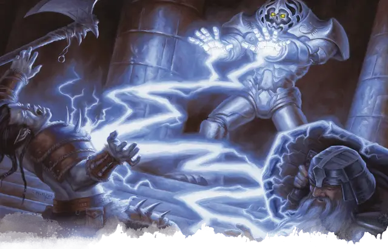

Тробрианд
Trobriand
Большой Конструкт, без мировоззрения, именной НИП

Класс Доспеха 20 (природный доспех)
Хиты 210 (20к10 + 100)
Скорость 30 футов
| мод | спас | ||
|---|---|---|---|
| СИЛ | 24 | +7 | +7 |
| ЛОВ | 9 | −1 | −1 |
| ТЕЛ | 20 | +5 | +5 |
| мод | спас | ||
|---|---|---|---|
| ИНТ | 20 | +5 | +5 |
| МДР | 11 | +0 | +0 |
| ХАР | 1 | −5 | −5 |
Иммунитет к урону огонь, психическая энергия, яд; дробящий, колющий, рубящий от немагических атак, кроме нанесённых адамантиновым оружием
Иммунитет к состояниям паралич, очарование, отравление, окаменение, истощение, испуг
Чувства тёмное зрение 120 футов, пассивное Восприятие 10
Языки Любой 6
Опасность 22 (41000 опыта)
Бонус мастерства +7
Особенности
Поглощение огня. Каждый раз, когда Тробрианд должен получить урон огнём, он не получает урон, и вместо этого восстанавливает число хитов, равное причиняемому урону огнём.
Неизменяемая форма. Тробрианд обладает иммунитетом ко всем заклинаниям и эффектам, изменяющим его форму.
Сопротивление магии. Тробрианд совершает с преимуществом спасброски от заклинаний и прочих магических эффектов.
Магическое оружие. Атаки оружием Тробрианда являются магическими.
Использование заклинаний. Тробрианд является заклинателем 18-го уровня. Его базовой характеристикой является Интеллект (Сл спасброска от заклинания 20, +12 к попаданию атаками заклинаниями). У него подготовлены следующие заклинания волшебника:
• Заговоры (неограниченно): волшебная рука [mage hand], огненный снаряд [fire bolt], фокусы [prestidigitation];
• 1 уровень (4 ячейки): волшебная стрела [magic missile], обнаружение магии [detect magic], щит [shield];
• 2 уровень (3 ячейки): обнаружение мыслей [detect thoughts], размытый образ [blur], туманный шаг [misty step], дребезги [shatter];
• 3 уровень (3 ячейки): контрзаклинание [counterspell], рассеивание магии [dispel magic], огненный шар [fireball], ускорение [haste];
• 4 уровень (3 ячейки): усыхание [blight], высшая невидимость [greater invisibility];
• 5 уровень (3 ячейки): оживление вещей [animate objects], длань Бигби [Bigby’s hand], наблюдение [scrying];
• 6 уровень (1 ячейка): пляшущая молния [chain lightning], сфера неуязвимости [globe of invulnerability];
• 7 уровень (1 ячейка): перст смерти [finger of death], узилище [forcecage];
• 8 уровень (1 ячейка): воспламеняющаяся туча [incendiary cloud], слово силы: оглушение [power word stun];
• 9 уровень (1 ячейка): слово силы: смерть [power word kill].
Действия
Мультиатака. Тробрианд совершает две рукопашные атаки.
Размашистый удар. Рукопашная атака оружием: +13 к попаданию, досягаемость 5 футов, одна цель. Попадание: Дробящий урон 20 (3к8 + 7).
Меч. Рукопашная атака оружием: +13 к попаданию, досягаемость 10 футов, одна цель. Попадание: Рубящий урон 23 (3к10 + 7).
Ядовитое дыхание (перезарядка 6). Тробрианд выдыхает ядовитый газ 15-футовым конусом. Все существа в этой области должны совершить спасбросок Телосложения Сл 19, получая урон ядом 45 (10к8) при провале, или половину этого урона при успехе.
Описание
В комнате высотой в 20 футов находится железный голем с головой в виде сделанного из металла черепа. Он стоит между тремя покрытыми железом и гудящими от переполняющей их магической силы каменными колоннами. Именно с помощью этих колонн Тробрианд недавно перенес в голема свою душу.
Он с нетерпением ждет испытания своего нового тела и беспощадно атакует незваных гостей, как только их заметит.
Деактивация или разрушение одной или нескольких колонн, уничтожение голема или его принудительный вывод из помещения заставляет душу Тробрианда покинуть голема и попытаться воссоединиться со своим обычным, скрытом в зоне 11с, телом. Если персонажи не уничтожили его тело, душа Тробрианда немедленно возвращается в него, и он восстаёт в зоне 11с как архимаг с тем же списком заклинаний, что и в форме голема, и теми же оставшимися ячейками заклинаний, когда он покинул железное тело. Его главная цель после этого только одна - уничтожить персонажей за вмешательство в его дела.
Когда после того как душа Тробрианда покинет тело голема и после этого голем не будет уничтожен, он становится обычным железным големом выполняющим приказы Мага Металла и атакующим незваных посетителей как только их заметит.
Если персонажи уже уничтожили тело Тробрианда в зоне 11с, а затем деактивировали или уничтожили хотя бы одну из колонн в этом зале, душа Тробрианда вынуждена покинуть голема, но ей некуда деваться, что фактически убивает Мага Металла.